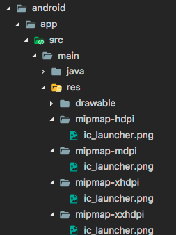

2.6 资源管理
Flutter APP 安装包中会包含代码和 assets（资源）两部分。Assets 是会打包到程序安装包中的，可在运行时访问。常见类型的 assets 包括静态数据（例如JSON文件）、配置文件、图标和图片等。
2.6.1 指定 assets
和包管理一样，Flutter 也使用pubspec.yaml文件来管理应用程序所需的资源，举个例子:
flutter:
assets:
- assets/my_icon.png
- assets/background.png
assets指定应包含在应用程序中的文件， 每个 asset 都通过相对于pubspec.yaml文件所在的文件系统路径来标识自身的路径。asset 的声明顺序是无关紧要的，asset的实际目录可以是任意文件夹（在本示例中是assets 文件夹）。
在构建期间，Flutter 将 asset 放置到称为 asset bundle 的特殊存档中，应用程序可以在运行时读取它们（但不能修改）。
2.6.2 Asset 变体（variant）
构建过程支持“asset变体”的概念：不同版本的 asset 可能会显示在不同的上下文中。 在pubspec.yaml的assets 部分中指定 asset 路径时，构建过程中，会在相邻子目录中查找具有相同名称的任何文件。这些文件随后会与指定的 asset 一起被包含在 asset bundle 中。
例如，如果应用程序目录中有以下文件:
- …/pubspec.yaml
- …/graphics/my_icon.png
- …/graphics/background.png
- …/graphics/dark/background.png
- ….
然后pubspec.yaml文件中只需包含:
flutter:
assets:
- graphics/background.png
那么这两个graphics/background.png和graphics/dark/background.png 都将包含在您的 asset bundle中。前者被认为是_main asset_ （主资源），后者被认为是一种变体（variant）。
在选择匹配当前设备分辨率的图片时，Flutter会使用到 asset 变体（见下文）。
2.6.3 加载 assets
您的应用可以通过AssetBundle对象访问其 asset 。有两种主要方法允许从 Asset bundle 中加载字符串或图片（二进制）文件。
1. 加载文本assets
- 通过
rootBundle对象加载：每个Flutter应用程序都有一个rootBundle对象， 通过它可以轻松访问主资源包，直接使用package:flutter/services.dart中全局静态的rootBundle对象来加载asset即可。 - 通过
DefaultAssetBundle加载：建议使用DefaultAssetBundle来获取当前 BuildContext 的AssetBundle。 这种方法不是使用应用程序构建的默认 asset bundle，而是使父级 widget 在运行时动态替换的不同的 AssetBundle，这对于本地化或测试场景很有用。
通常，可以使用DefaultAssetBundle.of()在应用运行时来间接加载 asset（例如JSON文件），而在widget 上下文之外，或其他AssetBundle句柄不可用时，可以使用rootBundle直接加载这些 asset，例如：
import 'dart:async' show Future;
import 'package:flutter/services.dart' show rootBundle;
Future<String> loadAsset() async {
return await rootBundle.loadString('assets/config.json');
}
2. 加载图片
类似于原生开发，Flutter也可以为当前设备加载适合其分辨率的图像。
1）声明分辨率相关的图片 assets
AssetImage 可以将asset的请求逻辑映射到最接近当前设备像素比例（dpi）的asset。为了使这种映射起作用，必须根据特定的目录结构来保存asset：
- …/image.png
- …/Mx/image.png
- …/Nx/image.png
- …
其中 M 和 N 是数字标识符，对应于其中包含的图像的分辨率，也就是说，它们指定不同设备像素比例的图片。
主资源默认对应于1.0倍的分辨率图片。看一个例子：
- …/my_icon.png
- …/2.0x/my_icon.png
- …/3.0x/my_icon.png
在设备像素比率为1.8的设备上，.../2.0x/my_icon.png 将被选择。对于2.7的设备像素比率，.../3.0x/my_icon.png将被选择。
如果未在Image widget上指定渲染图像的宽度和高度，那么Image widget将占用与主资源相同的屏幕空间大小。 也就是说，如果.../my_icon.png是72px乘72px，那么.../3.0x/my_icon.png应该是216px乘216px; 但如果未指定宽度和高度，它们都将渲染为72像素×72像素（以逻辑像素为单位）。
pubspec.yaml中asset部分中的每一项都应与实际文件相对应，但主资源项除外。当主资源缺少某个资源时，会按分辨率从低到高的顺序去选择 ，也就是说1x中没有的话会在2x中找，2x中还没有的话就在3x中找。
2）加载图片
要加载图片，可以使用 AssetImage类。例如，我们可以从上面的asset声明中加载背景图片：
Widget build(BuildContext context) {
return DecoratedBox(
decoration: BoxDecoration(
image: DecorationImage(
image: AssetImage('graphics/background.png'),
),
),
);
}
注意，AssetImage 并非是一个widget， 它实际上是一个ImageProvider，有些时候你可能期望直接得到一个显示图片的widget，那么你可以使用Image.asset()方法，如：
Widget build(BuildContext context) {
return Image.asset('graphics/background.png');
}
使用默认的 asset bundle 加载资源时，内部会自动处理分辨率等，这些处理对开发者来说是无感知的。 (如果使用一些更低级别的类，如 ImageStream或 ImageCache 时你会注意到有与缩放相关的参数)
3）依赖包中的资源图片
要加载依赖包中的图像，必须给AssetImage提供package参数。
例如，假设您的应用程序依赖于一个名为“my_icons”的包，它具有如下目录结构：
- …/pubspec.yaml
- …/icons/heart.png
- …/icons/1.5x/heart.png
- …/icons/2.0x/heart.png
- …
然后加载图像，使用:
AssetImage('icons/heart.png', package: 'my_icons')
或
Image.asset('icons/heart.png', package: 'my_icons')
注意：包在使用本身的资源时也应该加上
package参数来获取。
打包包中的 assets
如果在pubspec.yaml文件中声明了期望的资源，它将会打包到相应的package中。特别是，包本身使用的资源必须在pubspec.yaml中指定。
包也可以选择在其lib/文件夹中包含未在其pubspec.yaml文件中声明的资源。在这种情况下，对于要打包的图片，应用程序必须在pubspec.yaml中指定包含哪些图像。 例如，一个名为“fancy_backgrounds”的包，可能包含以下文件：
- …/lib/backgrounds/background1.png
- …/lib/backgrounds/background2.png
- …/lib/backgrounds/background3.png
要包含第一张图像，必须在pubspec.yaml的assets部分中声明它：
flutter:
assets:
- packages/fancy_backgrounds/backgrounds/background1.png
lib/是隐含的，所以它不应该包含在资产路径中。
3. 特定平台 assets
上面的资源都是flutter应用中的，这些资源只有在Flutter框架运行之后才能使用，如果要给我们的应用设置APP图标或者添加启动图，那我们必须使用特定平台的assets。
1）设置APP图标
更新Flutter应用程序启动图标的方式与在本机Android或iOS应用程序中更新启动图标的方式相同。
-
Android
在 Flutter 项目的根目录中，导航到
.../android/app/src/main/res目录，里面包含了各种资源文件夹（如mipmap-hdpi已包含占位符图像 “ic_launcher.png”，见图2-15）。 只需按照Android开发人员指南中的说明， 将其替换为所需的资源，并遵守每种屏幕密度（dpi）的建议图标大小标准。
注意: 如果您重命名.png文件，则还必须在您
AndroidManifest.xml的<application>标签的android:icon属性中更新名称。 -
iOS
在Flutter项目的根目录中，导航到
.../ios/Runner。该目录中Assets.xcassets/AppIcon.appiconset已经包含占位符图片（见图2-16）， 只需将它们替换为适当大小的图片，保留原始文件名称。
2）更新启动页

在 Flutter 框架加载时，Flutter 会使用本地平台机制绘制启动页。此启动页将持续到Flutter渲染应用程序的第一帧时。
注意: 这意味着如果您不在应用程序的
main()方法中调用runApp 函数 （或者更具体地说，如果您不调用window.render去响应window.onDrawFrame）的话， 启动屏幕将永远持续显示。
- Android
要将启动屏幕（splash screen）添加到您的Flutter应用程序， 请导航至.../android/app/src/main。在res/drawable/launch_background.xml，通过自定义drawable来实现自定义启动界面（你也可以直接换一张图片）。
- iOS
要将图片添加到启动屏幕（splash screen）的中心，请导航至.../ios/Runner。在Assets.xcassets/LaunchImage.imageset， 拖入图片，并命名为LaunchImage.png、LaunchImage@2x.png、LaunchImage@3x.png。 如果你使用不同的文件名，那您还必须更新同一目录中的Contents.json文件，图片的具体尺寸可以查看苹果官方的标准。
您也可以通过打开Xcode完全自定义storyboard。在Project Navigator中导航到Runner/Runner然后通过打开Assets.xcassets拖入图片，或者通过在LaunchScreen.storyboard中使用Interface Builder进行自定义，如图2-18所示。

2.6.4 平台共享 assets
如果我们采用的是Flutter+原生的开发模式，那么可能会存Flutter和原生需要共享资源的情况，比如Flutter项目中已经有了一张图片A，如果原生代码中也要使用A，我们可以将A拷贝一份到原生项目的特定目录，这样的话虽然功能可以实现，但是最终的应用程序包会变大，因为包含了重复的资源，为了解决这个问题，Flutter 提供了一种Flutter和原生之间共享资源的方式，由于实现上需要涉及平台相关的原生代码，故本书不做展开，读者有需要可以自行查阅官方文档。